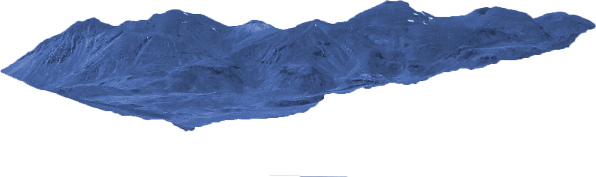
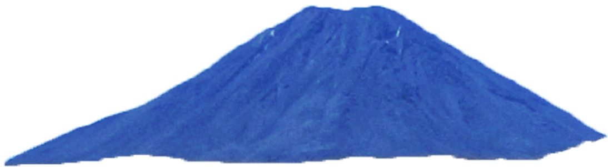

The Desert is a sandy area that spawns desert monsters, cacti, and waterleaf. Each map will generally contain at least two desert areas. Drained Oceans also become deserts. As of update 1.2, pools of water in the Desert biome take on a sandy yellow color. Pyramids are rarely created during world generation in Desert Biomes. A desert is considered a desert as long as there are at least 1000 sand blocks, causing the water and background to change, but desert plants and enemies can spawn on even a single block of sand. Deserts are overridden by most other biomes.


